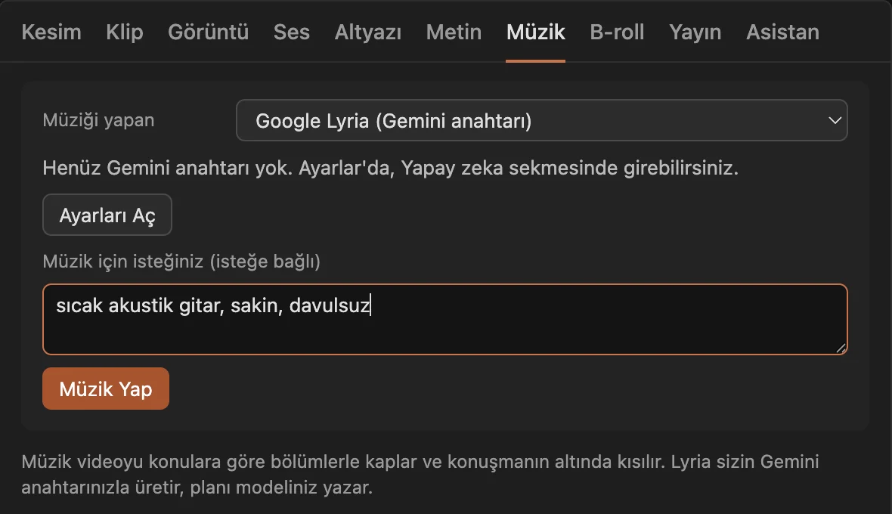

Müzik
Müzik sekmesi videon için, konularını izleyen bölümler hâlinde müzik yapar ve onu sesinin altında tutar.

Müzik yap
- Kimin yapacağını seçMüziği yapan: Google Lyria (Gemini anahtarı) ya da Eleven Music (ElevenLabs anahtarı). Anahtarı Ayarlar › Yapay zeka'da gir; sekme kayıtlı olup olmadığını söyler.
- İstersen ne istediğini söyleMüzik için isteğiniz (isteğe bağlı): bir hava, bir enstrüman, bir tempo.
- YapMüzik Yap'a bas. Yapay zeka modelin planı bölüm bölüm yazar, müzik hizmeti her bölümü yapar.
Eleven Music ElevenLabs kredini kullanır (yalnızca ücretli planlarda) ve Kilnframe kullanmadan önce sorar. Bir bölüm yapılamadıysa sekme Bu bölüme müzik gelmedi. der; Müziği Yeniden Yap yeniden dener.
Konuşma altında
Müzik konuşmanın altında kendiliğinden kısılır (Konuşma altında). Müzikten sonra kestiysen seviyesi artık uymaz: Seviyeyi Güncelle'ye bas. Müzik izinin seviyesi ve konuşurken kısma Ses sekmesinde.
Kendi müziğin
Kendi müziğini Medya'dan müzik izine (A3) koy. Seç ve Klip sekmesinde Videonun Sonuna Kadar Uzat'a bas: müzik kısaysa yumuşak birleşimlerle tekrarlanır, uzunsa kesilir; her iki durumda sonda yavaşça kısılır. Vuruşları Bul kesmek için vuruşlarını işaretler (Timeline).